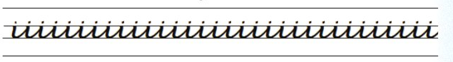
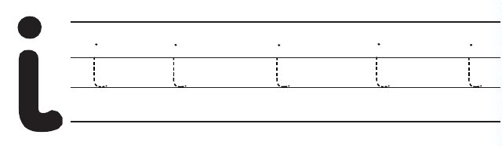
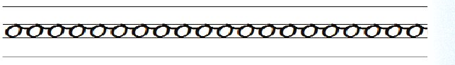

Somo la tatu: Kuandika herufi ya irabu i
Somo la tatu
Kuandika herufi ya irabu i
Katika somo hili utajifunza kuandika herufi ya irabu i.
Chora mchoro huu kwenye daftari.

Andika jibu kwa mkono katika sehemu hii.
Fuatisha herufi ya irabu i.

Andika jibu kwa mkono katika sehemu hii.
Andika herufi ya irabu hii kwenye daftari.
Mfano wa kuangalia
Andika jibu kwa mkono katika sehemu hii.
Somo la nne: o
Somo la nne
Kuandika herufi ya irabu o
Katika somo hili utajifunza kuandika herufi ya irabu o.
Chora mchoro huu kwenye daftari.

Andika jibu kwa mkono katika sehemu hii.